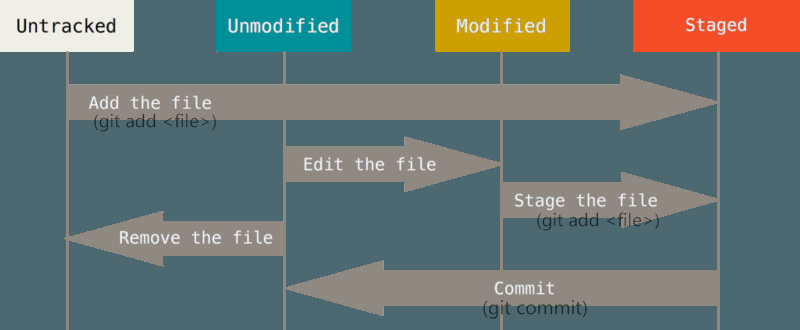

Git 基本操作总结
Git是当前最流行的分布式版本控制软件之一，它是Linux内核的设计者的又一经典作品。本文总结了Git一些基本的操作以及与远程GitHub仓库的交互。
参考资料：
Git的库目录
在当前文件夹创建仓库后，会生成一个隐藏文件夹 .git，包含如下内容：
文件/文件夹名 | 介绍
—————|—————–
hooks(钩) | 存放一些shell脚本
Info | 存放仓库的一些信息
logs | 保存所有更新的引用记录
objects | 存放所有的git对象
refs | 存储指向各个分支的指针（SHA-1标识）文件
COMMIT_EDITMSG | 最新提交的一次Commit Message，git系统不会用到，给用户一个参考
description | 仓库的描述信息，主要给gitweb等git托管系统使用
config | git仓库的配置文件
index | 暂存区（stage），一个二进制文件
FETCH_HEAD | 是一个版本链接，指向着目前已经从远程仓库取下来的分支的末端版本
HEAD | 指向当前所在分支的指针文件路径，一般指向refs下的某文件
ORIG_HEAD | HEAD指针的前一个状态
packed-refs | 当更新一个引用时，git会在refs/heads下写入一个新文件。当查找一个引用时，git首先在refs目录下查找，如果未找到则到packed-refs文件中去查找。
Git 文件状态及其转换
工作目录下的每一个文件都不外乎两种状态： Tracked(已跟踪) 或 Untracked(未跟踪 )。 Tracked 文件是指那些被纳
入了版本控制的文件，在上一次快照中有它们的记录，在工作一段时间后，它们的状态可能处于 Unmodified(未修改) ， Modified(已修改) 或 Staged(放入暂存区)。工作目录中除已跟踪文件以外的所有其它文件都属于未跟踪文件，它们既不存在于上次快照的记录中，也没有放入暂存区。
编辑过某些文件之后，Git将它们标记为已修改文件。我们逐步将这些修改过的文件放入暂存区，然后提交所有暂存了的修改，如此反复。
注：初次克隆某个仓库的时候，工作目录中的所有文件都属于已跟踪，未修改状态
使用Git时文件的生命周期如下：

Git基本操作
1. 在当前目录下创建仓库
git init
2. 将当前目录下的某文件 A 添加到仓库（文件 A 之前为 Untracked 状态）
git add 文件A （变为 staged 状态）
git commit –m "提交说明" （变为 Unmodified 状态）
3. 查询仓库当前的状态
git status
注： 如果同时存在 staged 状态与 modified 状态（即修改文件 A 并 add 但未 commit，又再次修改文件 A 。）此时 commit 只会将第一次修改后的结果提交。
4. Git日志命令
|
|
5. stage the changes
git add 文件A （变为 staged 状态）
再次查询 Git 状态会发现由 no changes add to commit 变为 changes to be committed。 此时已经处于 staged 状态
6. commit the changes
git commit (然后会进入到Vi编辑器模式，在首行记录所做改变，保存退出)
或者：
git commit -m "commit imformation"
再次查询 Git 状态会显示： nothing to commit
7. 创建分支:
git checkout -b <branchname> （创建并切换到该分支）
等价于：
git branch <branchname> + git checkout <branchname>
在分支内的操作不影响其他分支，其他分支保持原来状态
8. 查看分支：
git branch 查看本地分支
git branch –a 查看本地全部分支（包括origin（如果有的话）的分支）
9. 切换分支：
git checkout <branch name>
10. 合并分支（把分支 branchname 合并到当前分支里面）
使用 merge 方法：将branchname分支的每个commit重现在当前分支上（一般按时间先后顺序）
git merge \
使用 rebase 方法：将当前分支的每个commit（分歧点后）取消并保存为补丁（patch）,将branchname分支中的commit接到分歧点后，再将补丁接到最后，
git log查询会显示一条直线git rebase \
注意：
合并过程可能会出现冲突, Git 会用<<<<<<<，=======，>>>>>>>标记出不同分支的内容。
冲突解决：
使用git diff查看冲突，直接修改冲突文件，然后add，然后commit即可。
11. 撤销 merge：
git merge –abort
git reset --hard <hash> 其中<hash>为某次commit的hash值，可以将当前分支重置到该次commit之后
12. git fetch 命令
该命令用于跟踪远程仓库的提交情况，但不会修改本地仓库
git fetchcommand will fetch new commits from the remote repository, but it will not merge these commits into the local branches.
13. 克隆仓库
git clone <url>
修该命令会在本地产生一个目录，与远程主机版本库同名，若不想同名，则再加一个参数：
git clone <url> <自定义目录名>
在克隆出的仓库中使用：
|
|
14. 将远程仓库分支A的改变同步到克隆仓库对应分支中：
在克隆仓库中,有两种方法：
法一：git fetch + git merge origin/A
法二：git pull
git pull 等价于 git fetch + git merge origin/<当前分支默认track的远程分支>
15. 关于跟踪分支track
当克隆一个仓库时，它通常会自动地创建一个跟踪 origin/master 的 master 分支。二者相对应使得直接在本地某分支上执行 pull 与 push 时可以正确对应到远程分支上。
一般我们利用
git push --set-upstream origin <branch_name>
来在远程创建一个与本地 branch_name 分支同名的分支并跟踪；利用
git branch --track <本地分支名> <被跟踪的远程分支名>
来在本地创建一个分支跟踪远程分支（二者一般重名，比如abc 与 origin/abc）
注：创建后本地分支与远程分支内容是一致的。
16. 关于bare repository与repository：
git init 创建的是 repository，可以含有自己编辑的文件；还含有一个 .git 目录存放 Git 帮你管理的文件历史版本信息。
git init -bare 创建的是 bare repository，只含有版本控制信息，没有 .git 目录，而是直接把 Git 需要的文件放根目录底下了。但是，这个 bare 的目录本身的目录名，有一个 .git 的后缀
一个 bare 仓库，可以看成是一个 Git 的文件服务器，只存储版本管理的相关文件，不存储工作文件。你要干活，必须从 bare 仓库克隆一个到本地的目录，然后在这个克隆的目录里面工作。如果要把这些内容提交到一个 bare 仓库（通常是在一台服务器上），就做一个 push 的操作
新创建一个bare仓库：
git init –bare <仓库名>
从已有仓库克隆一个bare仓库：
git clone –bare <原仓库名> <仓库名>
17. 添加一个新的远程仓库，
可以指定一个简单的名字 shortname ，以便将来引用:
git remote add [shortname] [url]
18. 将本分支的改变 push 到 目标bare库的对应分支
git push <目标bare库的对应分支>